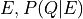
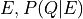
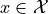
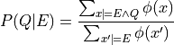
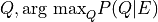

Inference Methods¶
Full posterior distributions¶
The following algorithms compute the full posterior distribution
over a set of variables  given the evidence .
given the evidence .
Enumeration-Ask¶
Performs exact inference by enumerating all possible worlds  that
are consistent with the evidence  , i.e.
, i.e.

Warning
This is intractable for all but the smallest reasoning problems.
MC-SAT¶
Performs approximate inference using the MC-SAT algorithm.
Gibbs Sampling¶
Performs Gibbs sampling on the ground MRF.
Most Probable Explanation (MPE)¶
In some cases, one is not interested in the full posterior distribution
over query variables given evidence ,
but only in the most probable variable assignment of 
pracmln provides two algorithms to perform this kind of MPE inference
(which is sometimes also referred to as maximum a-posteriori (MAP)
inference.
MaxWalk-SAT¶
A randomized weighted satisfiability solver that performs simulated annealing.
Parameters:
maxsteps: the maximum number simulated annealing stepsthr: the threshold for the sum of unsatisfied weighted formulas that needs be undercut for the algorithm to terminatehardw: a constant weight that will temporarily be attached to hard logical formulas.
WCSP¶
Performs exact MPE inference by converting the ground MRF into an equivalent weighted constraint satisfaction problem (WCSP) and solving it using the toulbar2 [AdGS10] solver. For more details, see [JMW09].
- AdGS10
D Allouche, S de Givry, and T Schiex. Toulbar2, an open source exact cost function network solver. Technical Report, Technical report, INRIA, 2010.
- JMW09
Dominik Jain, Paul Maier, and Gregor Wylezich. Markov Logic as a Modelling Language for Weighted Constraint Satisfaction Problems. In Eighth International Workshop on Constraint Modelling and Reformulation, in conjunction with CP2009. 2009.